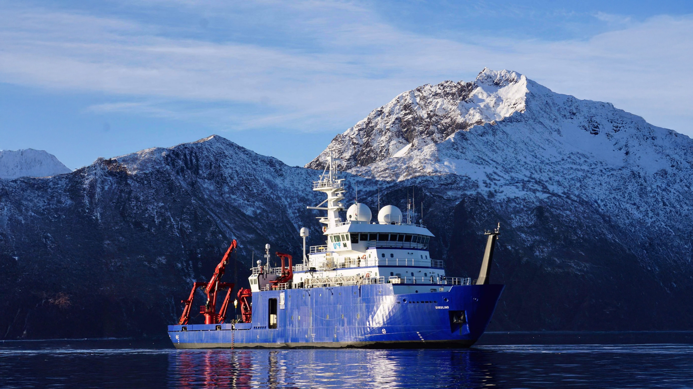

Week 5: 3D Design & Printing

Assignment: Model and 3D print something
This week, the first part of the assignment that I did was to scan something using photogrammetry! I initially had no idea how to do this until Wyatt sent a message to the class WhatsApp with a glowing recommendation for the app PolyCam in the form of a cool 3D model of Eli! Since I saw what it could do, I immediately tried it out myself. My first attempt was to model a globe because I thought that it could turn and that would make it easy, plus this globe had topography modeled on it, which I thought would make for a neat 3D scan. However, multiple failed attempts later, and I was running out of my free scans on this app. I didn't want to keep wasting my limited free resources on this globe that wasn't working, so I tabled it and decided to try something else. In retrospect, the app works a lot better when the camera is moving and not the object, so that is good to know for future usages. I don't think that it was an issue with the globe itself, but rather my usage of the app was poor. I then was thinking about what Wyatt said in class about how photogrammetry works best with organic forms and stuff that isn't super reflective. Being an EPS concentrator and an insufferable nerd, I immediately jumped to a specimen from my rock collection! I thought that this could make for a cool 3D scan, and if I chose a cool sample that I had, I thought that it would be interesting to see the crystal structure modeled in 3D space. To get the best possible first scan and minimize the usage of my limited free scans, I set up one of my favorite rocks - a 2.2 kg chunk of gorgeous green fluorite with huge, well defined crystals - onto a rug that had a pattern which I thought would be conducive to scanning, and I shined as much light as possible onto it. Honestly my first scanning the fluorite was almost perfect, and a little more attention to detail and slowing the process down to ensure that I got every side of the rock scanned in the second attempt produced an awesome scan! I have tried to put it into the website below.
This also has the added benefit of now I can look at this ~5 pound rock whenever I want on my phone! I love looking at my rocks, but many are fragile, so I don't want to handle them too heavily, and many are heavy, so I can't take them with me and look at them whenever. This 3D scanning thing solves both of those issues! I can digitize my whole collection and be able to look at it whenever and wherever I want to! Although that might require the pro subscription...